第16天：简单常量传播之代码实现
第16天：简单常量传播之代码实现
本节我们讲解常量传播的代码。
常量传播按照流程分为下面几个函数。
- const_prpgt_init
- simple_const_prpgt_analyse
- algebra_simplify
- cond_jmp_optimize
- remove_unreachable_block
第一个是初始化，包括内存分配、设定集合的初值和边界值。
第二个是使用迭代算法进行数据流值的传递与计算，直到达到不动点。
第三个是代数化简，根据每条指令的 in 和 out，尝试化简。
第四个是条件跳转优化，如果条件能化简为常量，则可以做多余边的删除。
第五个是移除不可达的块。
现在为读者仔细讲解每个函数。
const_prpgt_init
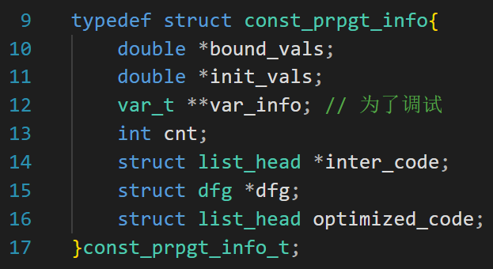
const_prpgt_info_t 这个结构体是专门为常量传播设计的。
第 10 行的 bound_vals 是一个 double 类型的指针，初始化完成后这个指针会指向数组的首元素，此数组里面是边界值。
复习一下什么是边界值。对于正向传播，Entry 块的 out 集合的初始值就是边界值。
如何确定边界值呢？对于要优化的中间代码，我们需要统计它使用到的全局变量、局部变量和形式参数。
对于全局变量，如果是非基本类型，边界值是 NAC；如果是基本类型，那要看有没有用常量初始化，如果有，边界值就是初始化的值，否则边界值为 0；这是因为后面生成汇编代码的时候，csub 会给没有初始化的全局变量都赋予 0 值。
对于形式参数，一律赋值为 NAC。
对于局部变量，规则和全局变量类似，不同的是如果没有用常量初始化，就赋值为 UNDEF。
以上规则不用纠结，为了说明原理，我们对复杂情况做了简单的处理，毕竟我们是学习编译原理，而不是造一个工业级编译器。
第 11 行的 init_vals 和第 10 行的 bound_vals 作用类似，只不 init_vals 代表的数组是存储初始值的，也就是其他 block 的 out 集合的初值。我们规定， 初始值全部是 UNDEF。
第 12 行的 var_info 也代表一个数组，此数组的元素是 var_t * 类型的。我们会把前面统计的所有全局变量、局部变量和形式参数的地址都收集到这个数组里面，方便调试。
第 13 行的 cnt 用来指示数组的元素个数。
14、15 行的两个指针分别指向函数的中间代码链表和流图。
16 行的 optimized_code 链表用来保存优化后的代码。
在讲初始化之前，还需要用到一个统计全局变量的函数。
统计一个函数里面使用了哪些全局变量还是比较麻烦的，不如把一个文件里面用到的全局变量都作为常量传播监控的对象。
在 sym_table.c 文件中，我定义了 LIST_HEAD(glb_vars_head);
这是一个空的链表。
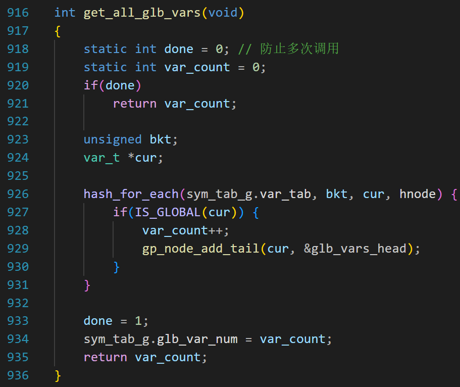
此函数用来统计某个 .c 里面定义或声明的全局变量。
在后面的课程中，也会用到这个函数，为了避免重复统计，第 918~919 行，我增加了 static 变量 done 和 var_count;
第一次调用的时候，因为 done 是 0，所以会执行第 926 开始的代码，遍历变量表，统计全局变量的个数，第 933 行把 done 置 1，说明已经执行过此函数。下次再调用的时候，直接从 921 行返回。
全局变量有什么特点呢？全局变量的作用域数组就一个元素：0；
第 927 行的宏是
#define IS_GLOBAL(x) (x->scope_path.path_len == 1)
就是判断作用域数组的长度。
第 929 行，把全局变量的地址加入刚才定义的 glb_vars_head 链表。
1 | |
var_t 这个结构体在前面讲符号表的时候就讲过了，为了常量传播，我需要在里面加个字段，名字叫 optimize_id，初始值设成 -1；前文不是说要把各种变量用 var_info 代表的数组收集起来吗？这个字段就表示这个变量在数组中的索引。
还有，在 fun_t 结构体的定义里面，增加了 local_vars_cnt 这个字段，记录局部变量的个数（不包括形式参数）。
函数里面的局部变量如何统计？
在定义局部变量的时候，会调用 def_var 函数，此函数里面会调用 gen_var_init 或者 gen_arr_init；
这两个函数都会调用 add_inst(new_general_inst(IR_OP_DECL, NULL, var, NULL));
所以，可以在 add_inst 函数中增加代码
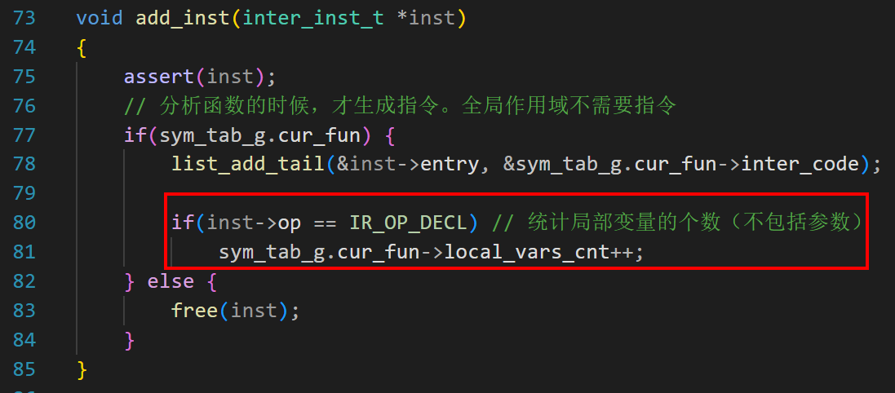
1 | |
因为值集在每个基本块之间传播，必须有专门的内存用于保存基本块的 in 值和 out 值。
所以，我设计了上面的结构，并把此结构加入到基本块的结构体定义中，也就是下面的第 31 行。
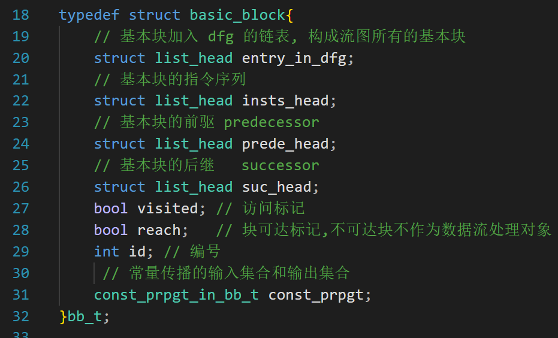
同理，值集也在基本块内传递，从一个指令到下一个指令，为了记录到达不动点时每条指令的 in 值和 out 值，我在 inter_inst_t 结构中增加了下面的 73、74 行。
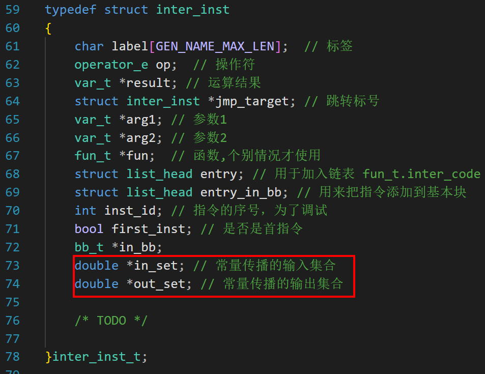
铺垫了这么多，下面我们看 const_prpgt_init 函数。
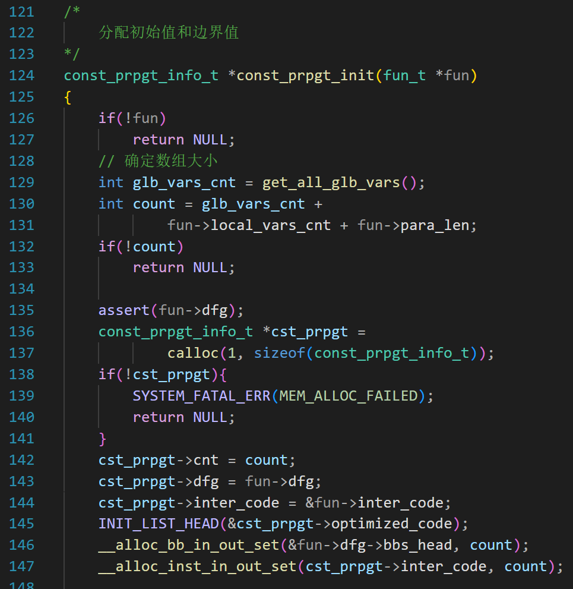
此函数的参数是某个函数符号，返回值是初始化后的 const_prpgt_info_t 结构体的指针。
第 129 行，调用前面讲过的 get_all_glb_vars 函数，得到全局变量的个数。
第 130 行，计算全局变量加局部变量加形式参数的个数。这个值就是数组的大小（元素个数）。
第 136 行，为 const_prpgt_info_t 结构体分配内存。
第 142 ~ 144 行，填写数组个数，填写 dfg 成员，填写 inter_code 成员。
第 145 行，初始化优化后的中间指令链表为空链表。
第 146 行，为流图中的基本块分配 in 值和 out 值的内存。
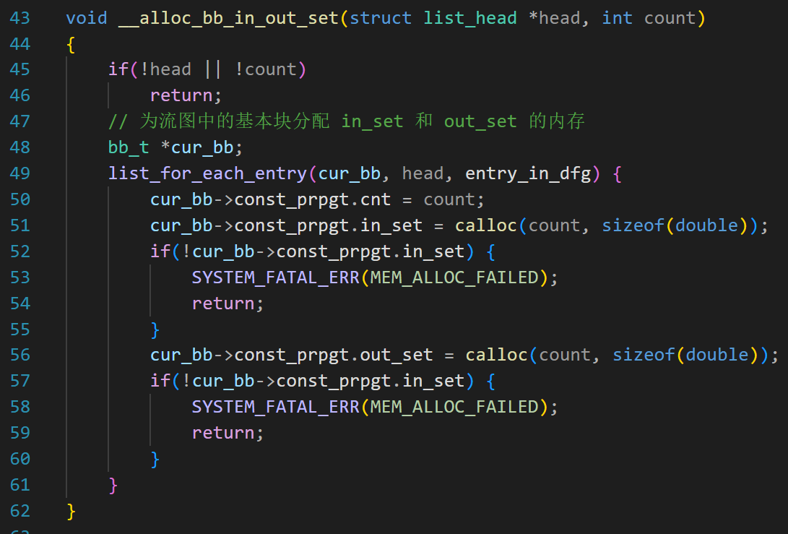
第一个参数 head 是基本块链表的头节点，第二个参数是数组的大小。
第 49 行，遍历流图里面的基本块，为每个基本块分配 const_prpgt_in_bb_t 中 in_set 和 out_set 指向的内存。
再回到 const_prpgt_init 函数，看第 147 行， __alloc_inst_in_out_set(cst_prpgt->inter_code, count);
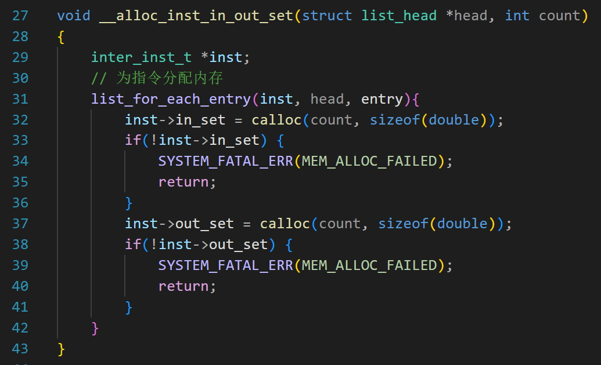
这就是为每个指令的 in 集合和 out 集合分配内存。
再然后，还是 const_prpgt_init 函数
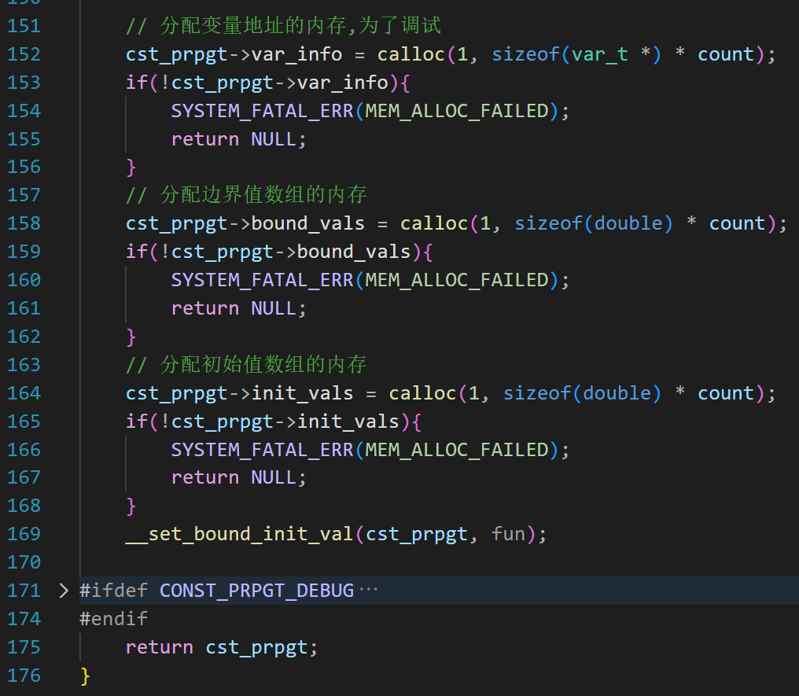
第 152 到 164，都是分配各种内存，不再赘述。
看第 169 行，代码如下。
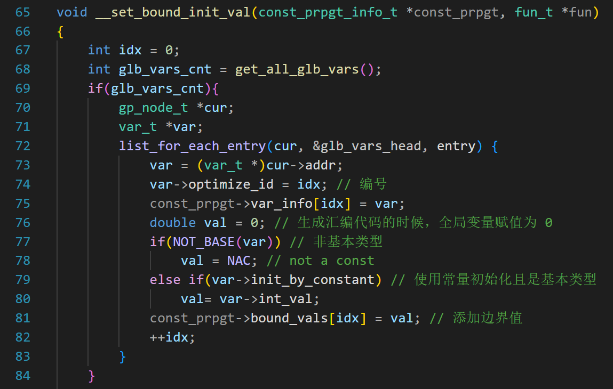
此函数用来收集边界值和设置初始值。
第 68 行，调用 get_all_glb_vars 函数，得到全局变量的个数。如果不为 0，执行 72 行开始的代码。
第 72 行，遍历全局变量的链表，拿出每个全局变量的地址
第 74 行，为它们逐个编号，也就是指定数组的下标
第 75 行，把变量的地址记录在 var_info 数组中
76~81，为全局变量设定合适的边界值，规则就是前文说的。
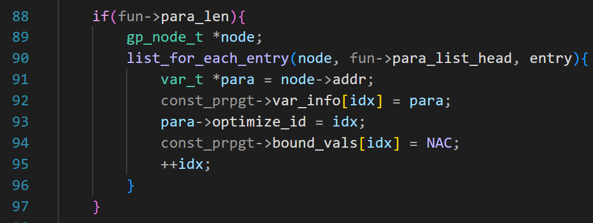
第 88 开始，统计函数的形式参数，之前做语法分析的时候，形参已经收集到 fun->para_list_head 链表中了。
第 94 行，形参的边界值是 NAC；
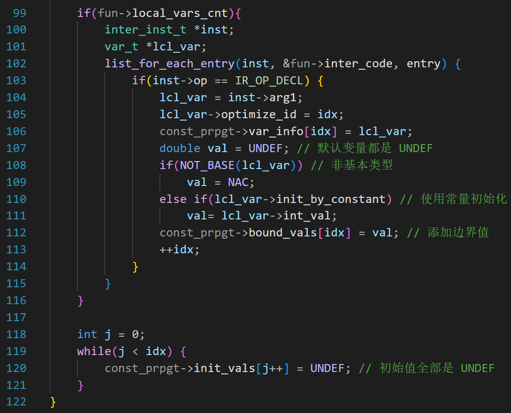
第 99 行开始，统计局部变量。
第 102 行，遍历函数的中间指令链表，如果是 IR_OP_DECL 运算，就说明定义了局部变量。
第 107~112，根据前文所述的规则，指定边界值。
第118~121，设置初始值，除了 Entry 块，其他基本块的 out 值都采用 UNDEF。
说了这么多，才把初始化说完。
初始化最重要的是， Entry 块的 out 集合设置好了边界值，其他块的out 集合设置好了初始值。
还需要解释为什么数组的元素类型是 double；常量传播格有三种值，UNDEF、整数、NAC。
刚好我们的编译器不支持浮点数，所以可以用非整数表示 UNDEF 和 NAC
1 | |
对于整数，可以用 3.0，4.0，5.0 等来表示
这样三种值都可以用 double 类型表示，而且还能区分开。
simple_const_prpgt_analyse
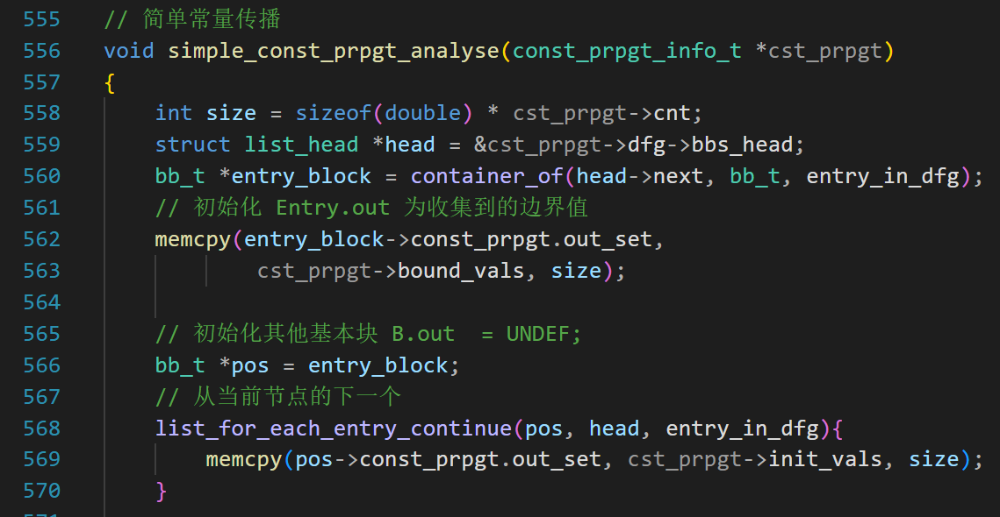
第 558 行，计算数组占用的字节数，这是为了第 569 行的 memcpy
第 559~560，得到 Entry 块的地址；
第 562~563，用边界值初始化 Entry 的 out 集合。
第 566~570，初始化其他基本块的 out 集合，也就是全 UNDEF
list_for_each_entry_continue 是一个宏，之前我们没有用过。它的意思是从 pos 的下一个节点开始遍历链表。
有读者问为什么不初始化 in 集合？
因为除了 Entry 块，每个基本块的 in 集合都来自于它前驱的 out 集合, 如果是单一前驱，那它的 in 集合和前驱的 out 集合是完全相等的。如果它有两个或以上的前驱，则需要用交汇函数把这些前驱的 out 合并在一起，作为它的 in;所以，对于正向分析，只需要初始化每个基本块的 out 集合。同理，对于逆向分析，只需要初始化每个基本块的 in 集合。
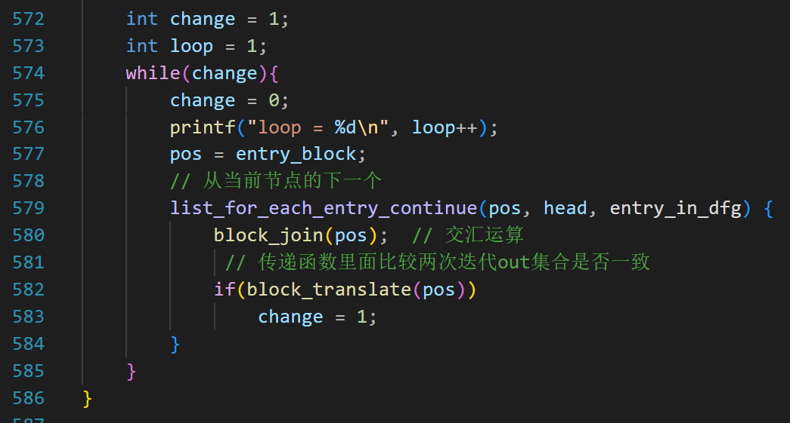
因为 change 的初始值是 1，所以至少执行 while 循环一次。
第 579 行，从 Entry 块的下一个基本块开始，先调用 580 行的 block_join 函数完成交汇运算，然后调用第 582 行的 block_translate 完成传递函数做的工作。此函数的返回值为 1 说明这次迭代的 out 值和上一次迭代的 out 值相比有变化，这说明没有到达不动点，所以第 583 行让 change 为 1，继续下一轮迭代。
当每个基本块的 out 值都不变的时候，说明已经到达不动点，这时候 change 为 0，退出 while 循环。
现在，我们把注意力放到 block_join 函数，看看它的代码。
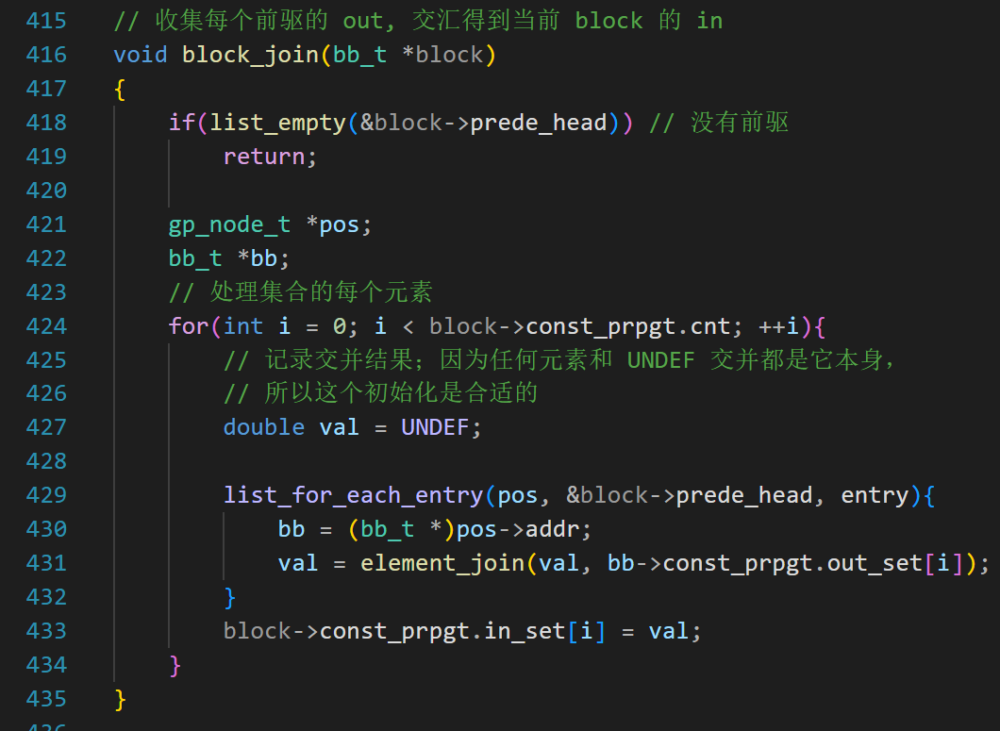
注意，输入参数是某个基本块的地址，求的是这个基本块的前驱的交汇。
结果保存在这个基本块的 const_prpgt.in_set 中（第 433 行），前文也说了，基本块的 in 集合的值来自它的前驱或多个前驱的交汇。
第 418 行，如果基本块没有前驱（例如 Entry），那就直接返回。
因为我们是从 Entry 的下一个基本块开始的，所以肯定存在前驱。
第 424 行，集合里面有若干元素，分别是每个变量的格值，我们用 for 循环依次处理每个变量的格值。
第 427 行，设定初始值为 UNDEF，原因请看 425~426 行的注释
第 429 ~ 431行，遍历前驱链表，得到每个前驱块，拿出这个前驱块的 out 集合中某个元素（对应某个变量的格值），和 val 做交汇运算，并把结果更新到 val;
第 433 行，当所有前驱都处理完成后，把最后的结果更新到 const_prpgt.in_set[i]
第 431 行，element_join 函数的代码如下：
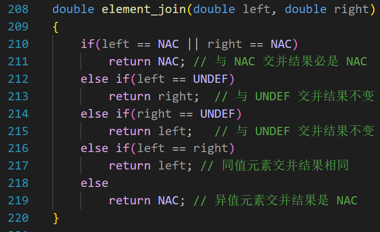
在上一节，我们已经介绍了常量传播的交汇规则，这里复习一下：
常量传播的交汇函数是（其实就是在哈斯图中找两个元素的最大下界）：
- x ⊓ ⊤ = x（任何值与 Top 合并保持不变）
- x ⊓ ⊥ = ⊥（任何值与 Bottom 合并结果为 Bottom）
- c1 ⊓ c1 = c1（相同常量合并仍为该常量）
- c2 ⊓ c2 = ⊥（不同常量合并结果为 Bottom）
上面的代码就是根据这些规则写的。
再回到上面代码第 582 行，交汇完成了，这个基本块的 in 值准备完毕，接下来就是在基本块内的传递。
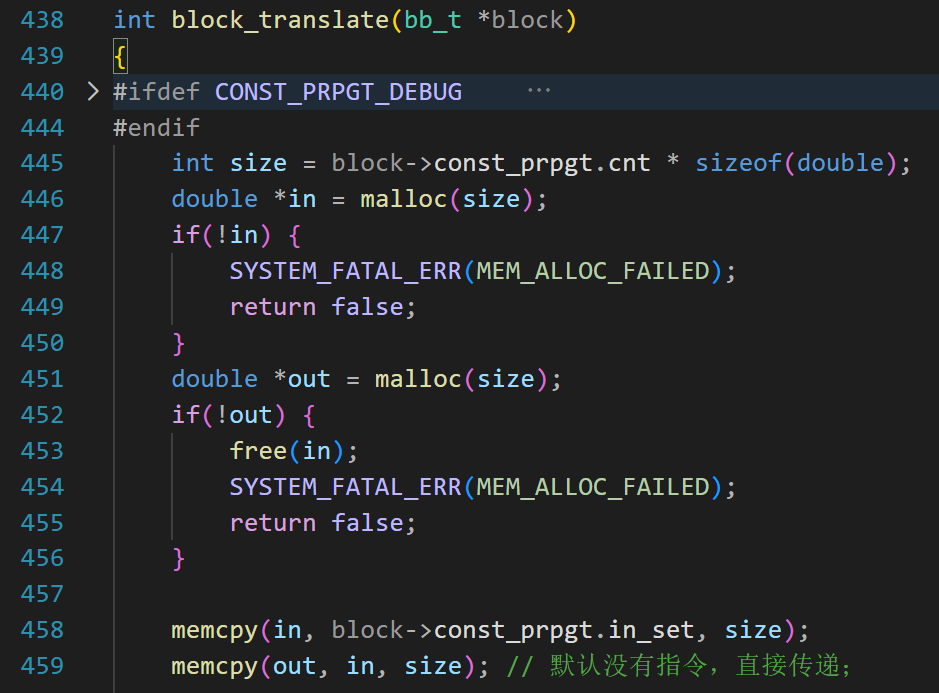
第 445~451行，分配两块内存，可以认为是 2 个数组，一个叫 in，一个叫 out。具体怎么用，马上会讲。
第 458 行，把基本块 in 集合的值拷贝到数组 in 中；
第 459 行，考虑极端情况，基本块里面没有任何指令，把数组 in 的值全部拷贝到数组 out；
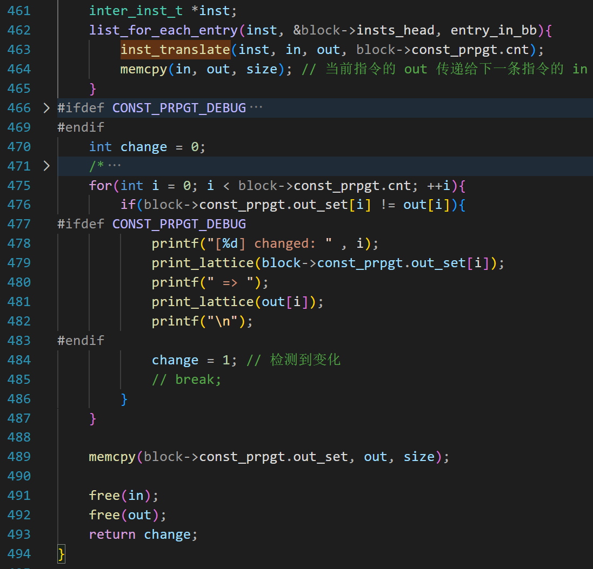
第 462 行，遍历基本块的指令链表，针对每条指令调用 inst_translate 函数。这个函数的作用是根据常量传播的传递函数，从指令的输入集合得到指令的输出集合。
前面分配的数组 in 和 out 分别对应指令的输入和输出集合。
第 464 行，把当前指令的 out 值传递给下一条指令的 in
当基本块内的所有指令处理完后，out 数组的值就是当前基本块的 out 集合值。
第 476，比较基本块上一次迭代的 out 集合和当前 out 集合，如果有不一样的，设置 change 为 1；
第 477~483 是日志，打印出所有改变的值。
当检测完变化后，第 489 行，用 out 集合的值覆盖掉 block->const_prpgt.out_set，更新基本块的 out 集合值。
第 493 行，返回 change，这样调用者就可以知道上一次迭代的 out 集合和当前 out 集合是否一致
现在我们看看 inst_translate 函数。
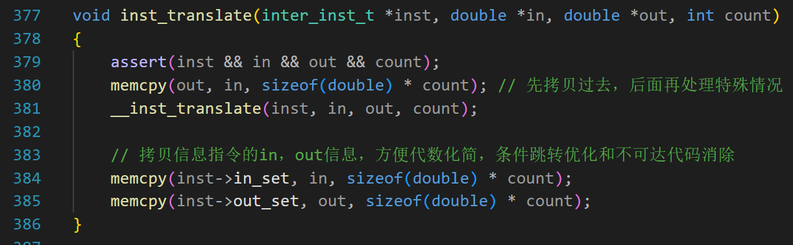
第 380 行，先把指令 in 集合的值拷贝到 out 集合中，默认直接传递。
第 381 行，这才是真正的逐指令传递的函数。马上会讲。
第 384~385 行，把 in 和 out 的值拷贝到这条指令的 in_set 和 out_set 集合中，这样做是为了在到达不动点的时候，指令的 in_set 和 out_set 集合中就保存了所有变量的格值，便于我们做进一步的优化。
__inst_translate
第 241~242 行，排除掉我们不关心的指令。下图画阴影的都是我们不关心的，因为这些指令不改变变量的格值。
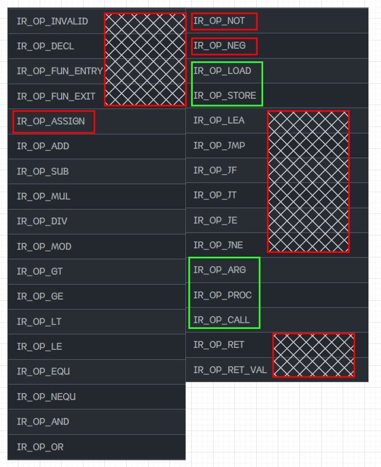
红色框有 3 条指令。我们先处理这 3 个。
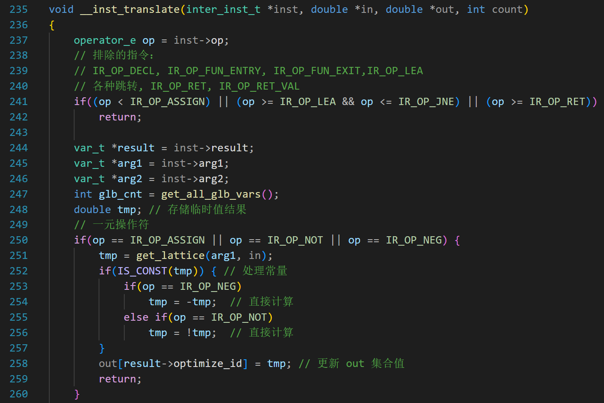
第 250 ~259，处理三个一元操作符，对于逻辑非和取负数指令，如果操作数已经被映射到常量，我们可以直接计算。然后把结果传递到 out 集合，准确讲是修改 out 集合中 result 变量对应的值。
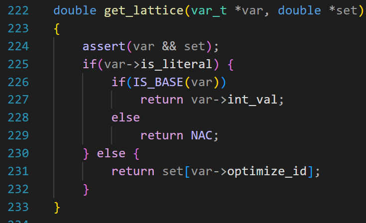
get_lattice 的作用是取出某个变量在某个集合中的格值。如果是常量且是基本类型，就返回常量的值；如果是常量但是不是基本类型，比如是个字符串，那就返回 NAC（第 229 行）；如果不是常量，那就取出集合中此元素的格值。
第 252 行的 IS_CONST 是一个带参数的宏。
如果既不是 UNDEF 也不是 NAC，那肯定是常量。
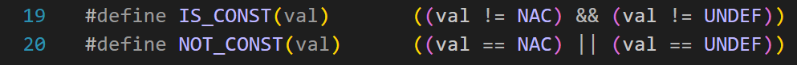
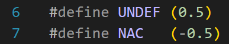
还有 5 个特殊的指令。图中绿色框的
IR_OP_ARG、IR_OP_STORE、IR_OP_LOAD、IR_OP_PROC、IR_OP_CALL
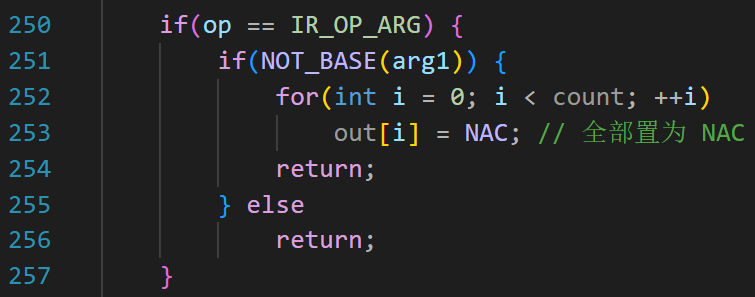
如果是参数传递运算，对于非基本类型，比如指针，我们也不知道这个指针指向哪里，保守认为函数会通过指针修改所有可见的变量，所以有第 252~253 行。
如果是基本类型，直接传递，就是不改变 arg1 的格值。
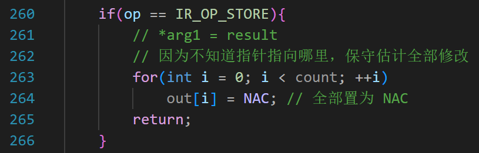
IR_OP_STORE 操作也是这个道理。
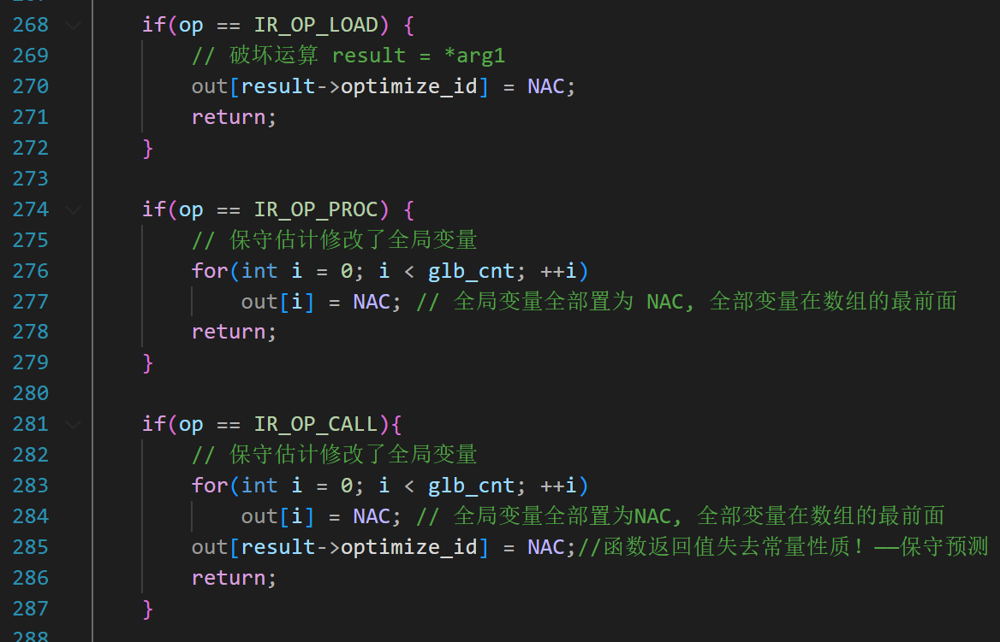
第 268 行，处理 IR_OP_LOAD
我们不知道指针 arg1 指向哪里，自然就不知道 *arg1 的值，所以保守做法就是把 out 集合的 result 元素映射到 NAC；
第 274 行处理函数调用，函数里面做什么我们不知道，而且我们仅做函数内的优化，不做跨函数的优化，所以保守认为所有的全局变量都变成 NAC；
第 281，这是带返回值的函数调用，道理类似，不同的是函数的返回值也要映射到 NAC，因为我们不知道返回值是多少。
这样之后，就只剩下二元操作了。
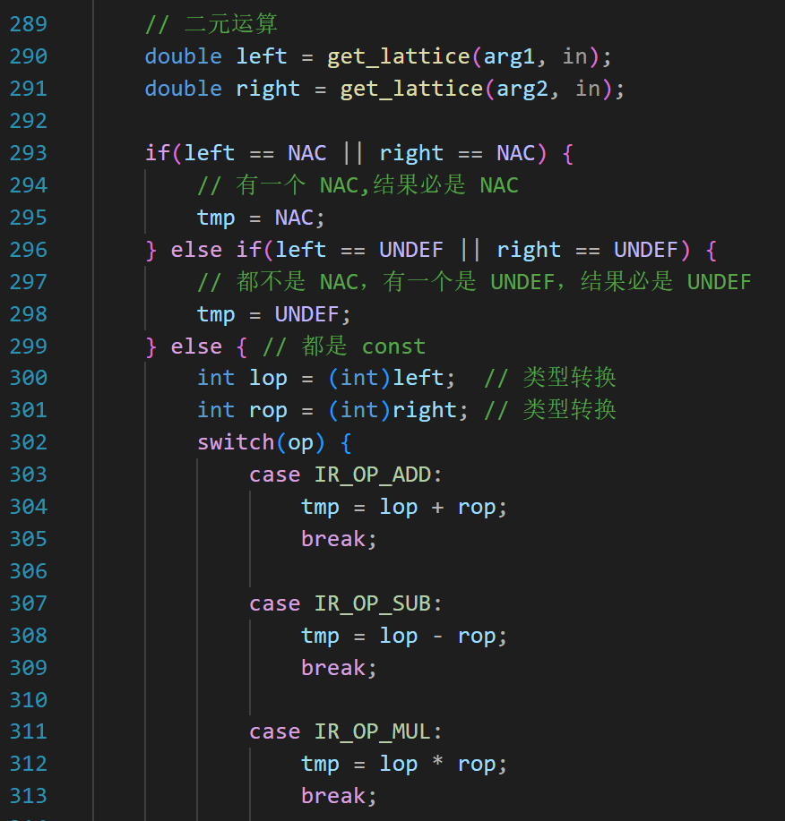
第 290~291：先得到两个操作数的格值，
第 293~299：意思是这样的：
如果指令是 y op z 的形式，那么传递函数如下：
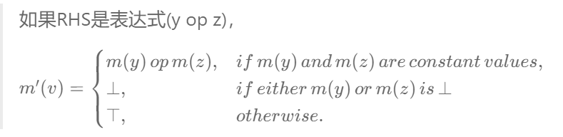
龙书 P406
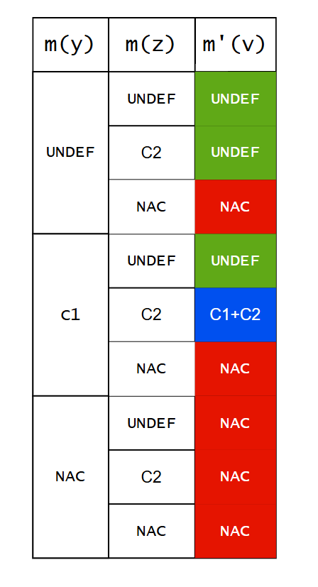
如果把 m(y)、m(z) 和 m’(v)的值列出来，一共九种可能，如上图。最右边那列是结果。
我们先看红色的 NAC，特点就是m(y)、m(z)中至少有一个是 NAC
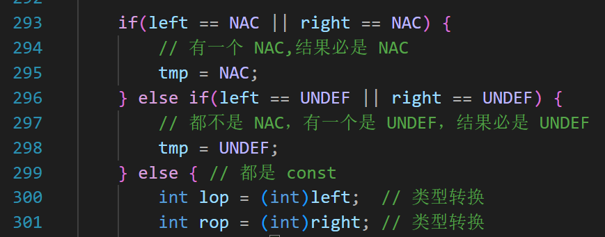
对应代码 293~295
然后看绿色的 UNDEF，特点就是m(y)、m(z)中至少有一个是 UNDEF
对应代码 296~298
剩下就是蓝色的，特点是两个都是 const,对应代码 299 的 else 分支。
我们再回到代码。
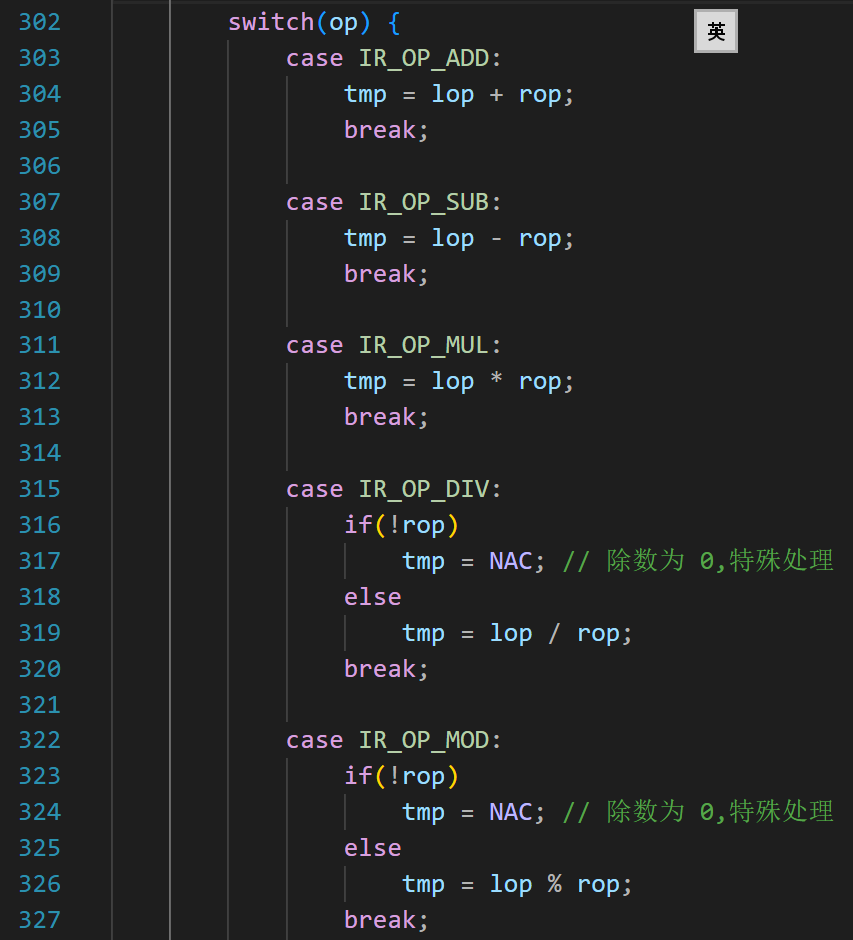
既然都是常量，那就让编译器来计算。第 316 行的意思是，如果除数是 0，编译器也很难办啊，只能给 tmp 赋值 NAC了。第 324 行的取余操作也是这个道理。
后面还有一些二元操作的化简， 就不贴代码了。
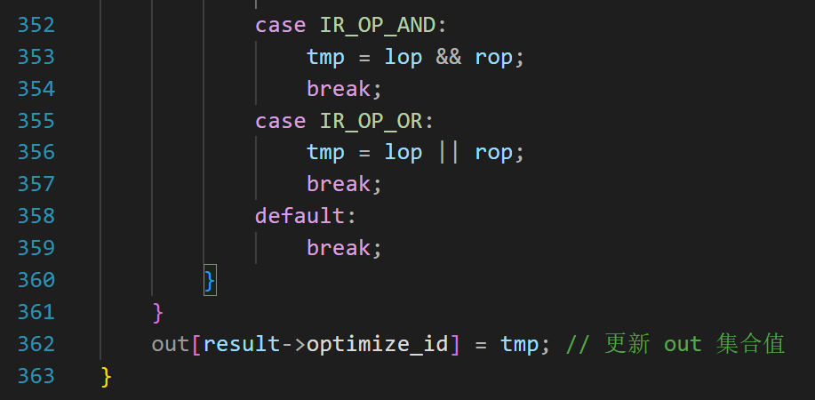
第 362 行很重要，化简后的结果要写入 out 集合。
以上就把指令传递讲完了。
代数化简
当常量传播的数据流分析到达定值后，就可以进行代数化简了。
代数化简是逐条指令进行的。
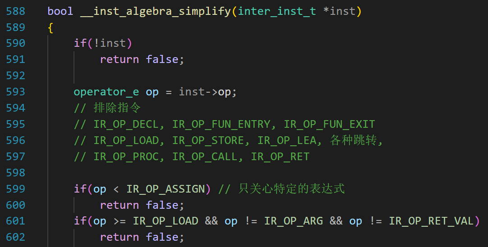
第 599~602，排除掉我们不关心的指令。就是图中标记阴影的部分。
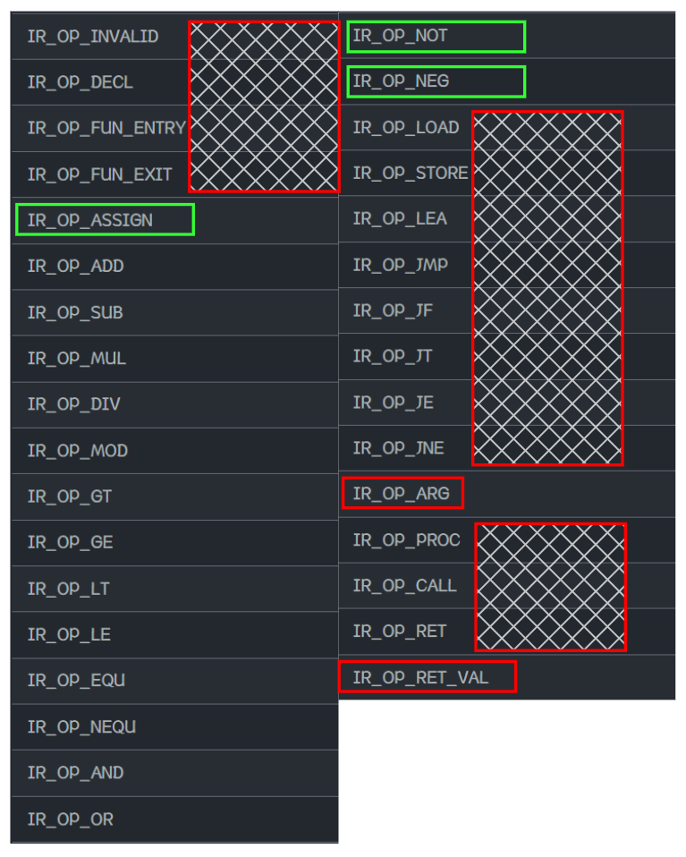
然后，看红框的指令，也就是 535 行的两个指令。
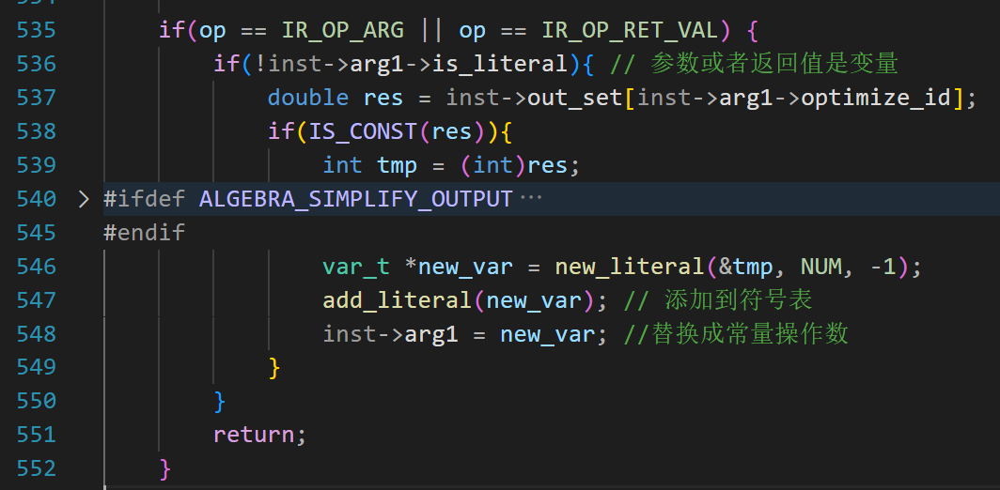
第 536，如果传递的参数本身就是常量或者返回值是常量，那无需化简，直接返回（551）
否则，我们查看 arg1 在 out 集合中的值，如果为常量，说明可以用常量替换它。
第 539 行，把类型转换为整形，第 546，创建常量并加入符号表。
第 548 行，把 arg1 替换为常量。
如果不是这两个指令。那么就剩下二元操作指令和仅有的三个一元操作（绿框圈出来的）
1、对于 IR_OP_ASSIGN
例如 res = a;
当指令的输出值集合里面，res 变量对应的格值是常量(比如 4)，则可以化简，我们用 res = 4; 替换掉这条指令。
不过也可能不是常量传播的结果，例如代码里面本来就是 res = 4; 这种情况就忽略。
2、IR_OP_NOT、IR_OP_NEG 和 二元运算
例如 res = !a; res = -a; res = a + b；
如果指令的输出值集合里面，res 变量对应的格值是常量,则可以化简，同上，我们用 res = c 替换掉这条指令。
综上，套路都是一样的：直接看指令的输出值集合里面，res 对应的值是不是常量。
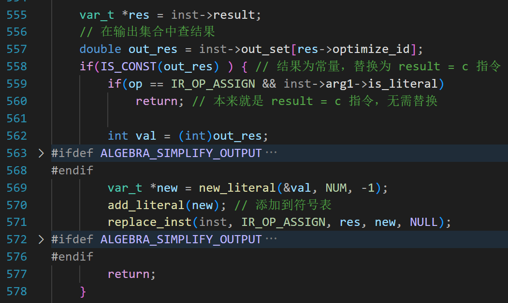
第 555~557，查看指令的 out 集合，如果是常量，先检查是不是本身就是 res = c; 如果是，不需要替换，直接返回。
否则，第 569 ~571， 用 res = c 替换原来的指令。
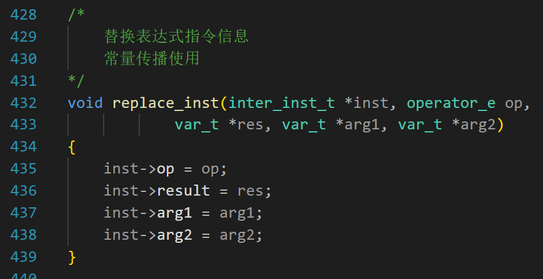
指令替换的代码很简单，如上。
如果 558 行的条件不成立，说明结果不是常量，那该怎么办呢？
这也要看情况。
如果是三个一元操作（绿框），那是真的没法优化了。
如果是二元操作，而且其中一个是常量，还是可以优化的。
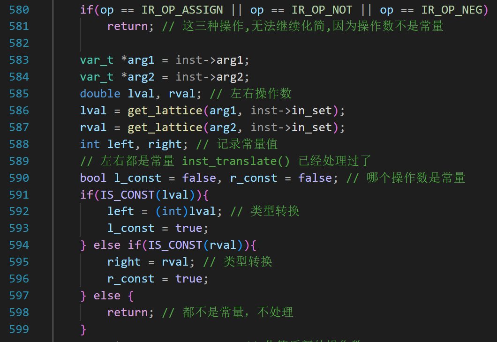
第 580 行，排除掉三个一元操作（绿框）
第 583 行开始，拿出 2 个操作数的格值，如果其中一个是常量，还有化简的可能，都不是常量，直接返回（598）
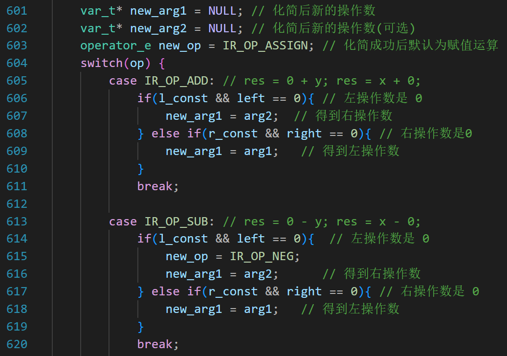
从 601 开始，尝试做代数化简。例如 res = x + 0; 可以化简为 res = x;
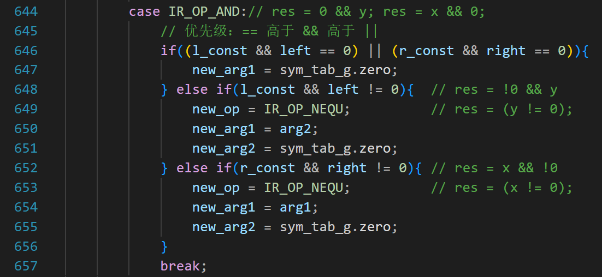
再比如说， res = 4 && y;
既然一个操作数为 4，那结果就取决于 y 是不是 0，当 y == 0 的时候结果为假，当 y != 0 的时候结果为真;那么就可以替换成 IR_OP_NEQU 操作，两个操作数变成一个操作数，减少计算量。
其他代码道理类似，不赘述。
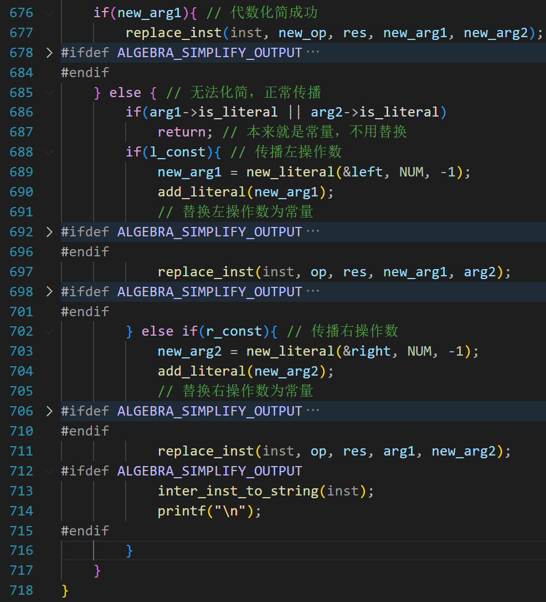
如果代数化简成功，就执行 677 行，用新的指令替换掉旧的指令。
如果没法做代数化简，那就把操作数替换掉。例如 res = x + y; 如果确定 y 的格值是常量，比如 10，那就把指令改成 res = x + 10; 这也是好的， 能减少对内存的访问。
第 687 行，如果操作数本身就是常量，就不用替换。
688~697，替换左操作数为常量
703~711，替换右操作数为常量。
第 690 行，这里调用 add_literal 把常量加入符号表是为了内存管理，防止内存泄漏。
条件跳转优化
条件跳转优化也是逐指令分析，如果是条件跳转指令，则判断条件是不是常量，如果是，就可以优化。
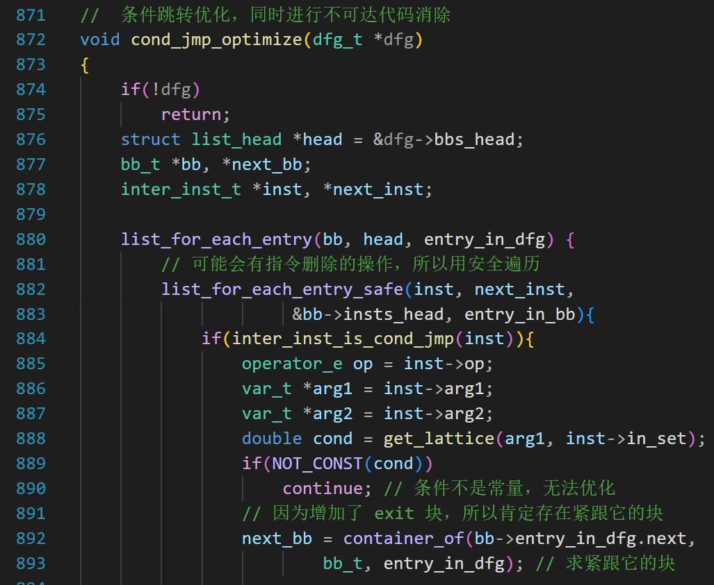
第 880 行，遍历流图的每个基本块；
第 882~883，遍历基本块的每一条指令。
第 884，判断这个指令是不是条件跳转，如果是则尝试优化，不是就让 inst 指向下一条指令。
第 888 行，拿出 arg1 的格值，如果不是常量，就让 inst 指向下一条指令。
如果 arg1 的格值是常量，执行 892~893，我们先求当前块的紧跟块，
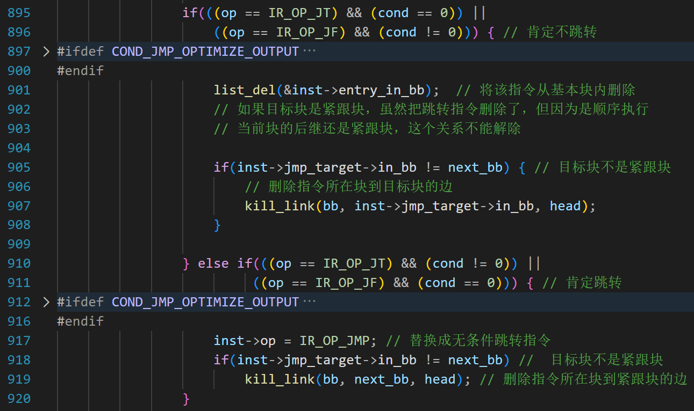
第 895~896，如果指令是“为真则跳转”且条件为假，或者指令是“为假则跳转”且条件为真，那结果都是不跳转。那这个跳转指令就没有作用，可以把它删除（901行）；
另外，如果跳转指令的目标块不是紧跟块，就可以解除目标块和当前块的关系，也就是删除当前块到目标块的边。
需要注意，第 905 行的判断是必要的，因为跳转指令的目标块也可能是紧跟它的块，如果是这样，即使删除了跳转指令，但是由于顺序执行，还会执行紧跟块，所以这种情况下当前块到目标块的边是不能删除的。
第 910~911，如果指令是“为真则跳转”且条件为真，或者指令是“为假则跳转”且条件为假，那结果是一定跳转。第 917 行，把有条件跳转指令换成无条件跳转指令。既然当前块一定会跳转到目标块，那么应该解除当前块到紧跟块的边。同理，如果目标块是紧跟块，就不能解除。
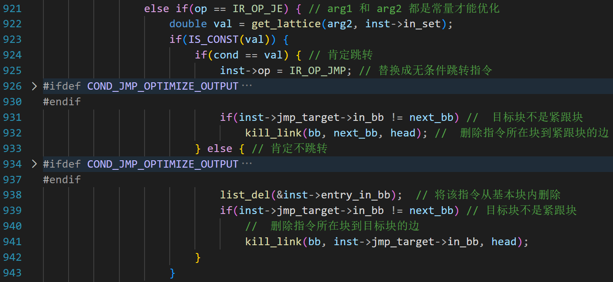
如果是相等则跳转（IR_OP_JE），那么会用到 2 个操作数，第 922 行获得 arg2 的格值，当它也是常量的时候，才能优化。第 924 表示两个操作数相等，则肯定跳转。剩下的代码和前面同理，不再解释。
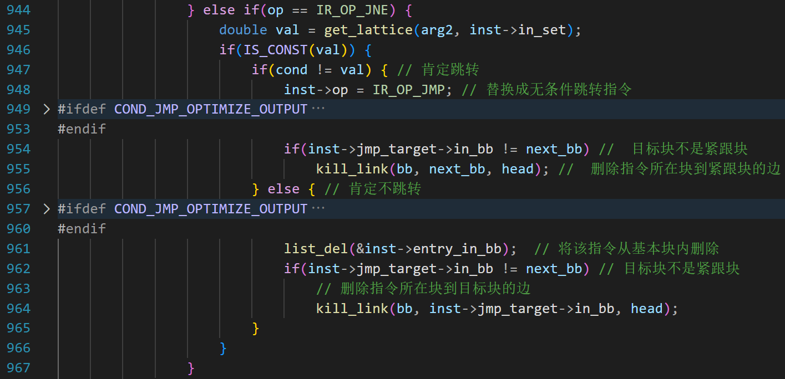
如果是不相等则跳转（IR_OP_JNE），道理类似，不再解释。
因为条件跳转优化的过程可能会删除某些边，导致某些基本块不可达，所以我们调用 remove_unreachable_block 移除不可达的基本块。
至此，常量传播优化就完成了。
优化的结果呢？
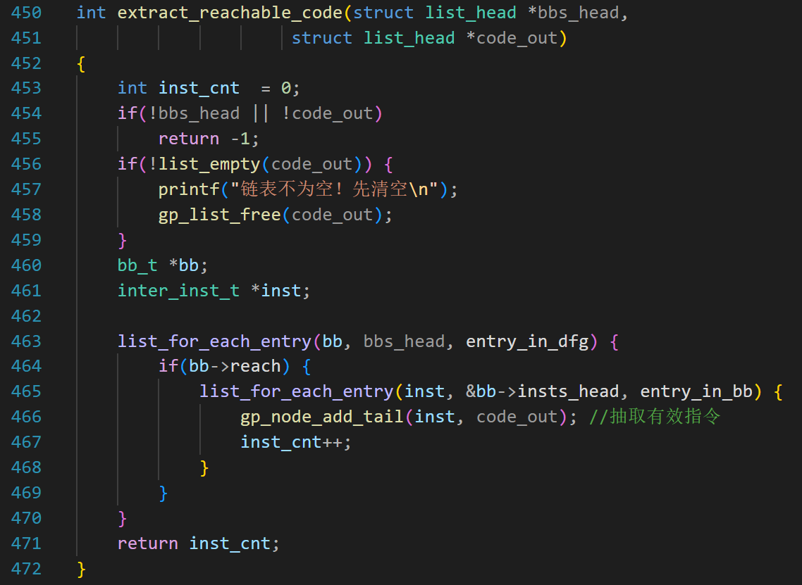
此函数用来提取优化后的指令。
第一个参数是基本块链表的头节点。第二个参数是一个空链表的头节点，用来存储有效指令。
第 463 行，遍历所有的基本块，当基本块可达的时候，执行第 465 行，遍历基本块内的指令，第 466 行，把指令的地址保存到链表 code_out 中
这样，我们就可以获取全部有效指令了。
成果展示与讨论
测试代码：
1 | |
优化日志如下（截取部分）：
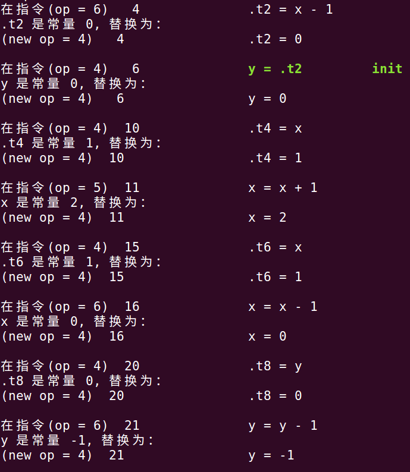
根据日志在原来的流图上做标注：
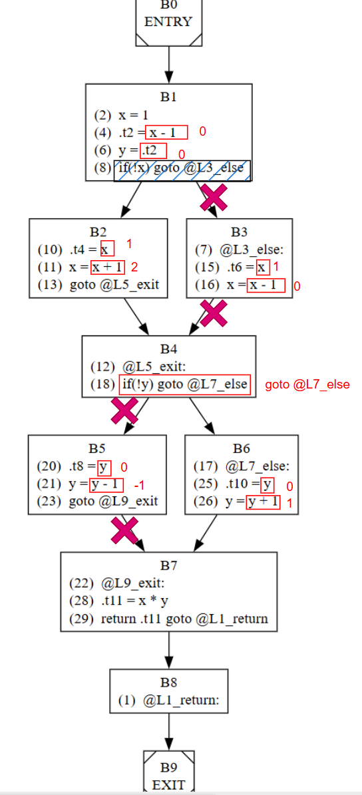
在代数化简完成后，把图中红框都替换成了常量；
在条件跳转优化完成后，删除了指令（8）；把指令（18）替换成无条件跳转；删除了 1->3、3->4、4->5、5->7 的边。
有的同学会问，为什么 B7 没有得到化简？按理说应该把 B2 中的 x = 2 传播到 B7,并且把 B6 的 y = 1 传播到 B7，把指令（28） 替换为 t11 = 2;
这个问题问得好。常量传播框架不止一种，例如简单常量传播、条件常量传播、稀疏常量传播等。我们学习的是简单常量传播。
对于简单常量传播，第一步是到达定值，在到达定值的基础上，做代数化简和条件跳转优化。上面的例子，当到达定值的时候，B7 的 x 和 y 的格值都是 NAC；因为 B5 和 B6 分别把 y = -1 和 y = 1 向 B7 传播，所以 y 就变成 NAC 了；B2 和 B3 分别把 x = 2 和 x = 0 向 B4 传播，所以 x 就变成 NAC 了；
既然 B7 的入口处， x 和 y 的格值都是 NAC，那自然没有办法优化。
有的读者会疑惑，不是删除了 1->3、3->4、4->5、5->7 的边吗？应该只有 B2 的 x 可以往下传播，同理，应该只有 B6 的 y 可以往下传播。我懂你的意思，但是删除边是在到达定值之后做的。你的意思是边传播边删除，简单常量传播没有这个功能，条件常量传播应该可以满足你的要求。
条件常量传播比简单常量传播的精度更高，优化能力更强。
我们再看一个简单的例子。
1 | |
-
简单常量传播：
在 if 语句之前，是知道 x = 5 的；但是进入 if 分支后，不利用 x == 5 这个条件；还有可能因为后续路径合并（如还有 else 分支）而将 x 升级为 NAC（非常量）；
所以，y = x + 1 无法优化为 y = 6.
-
条件常量传播：
在 if 语句之前，是知道 x = 5 的；进入 if 分支后，结合 x == 5，推出在此分支内，x 一定是 5，于是把 y = x + 1 优化为 y = 6.
这就是二者的区别。
本文到这里就结束了，对于条件常量传播，留给学有余力的同学去探索。